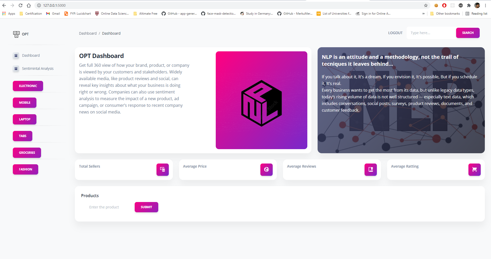

NLP and Web Scraping

This web app predicts the species of penguins as a function of their input parameters (bill length, bill width, flipper length, body mass, sex and island). The web app was built in Python using the following libraries:
- streamlit
- pandas
- numpy
- scikit-learn
- pickle an